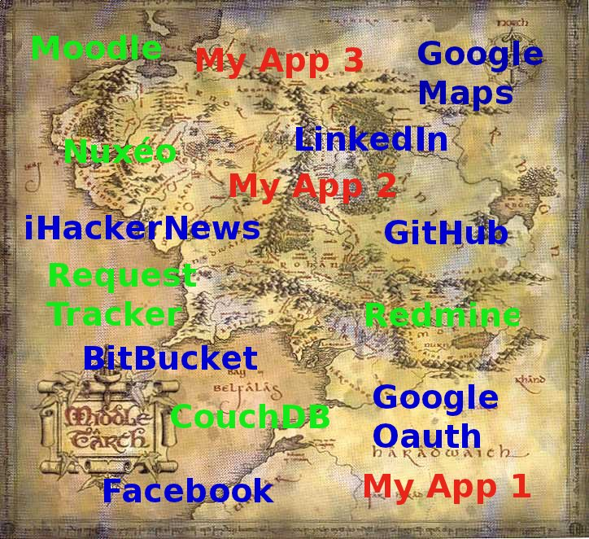

REST in SPORE
PyconFR 2012 - Paris
SPORE
Specification to a POrtable Rest Environment
Description d'API Web REST
Document texte simple et lisible : JSON
Utilisable par des implémentations spécifiques à chaque langage
Génération d'objets clients de haut niveau
Pourquoi ?
Constatations
Conséquences
Développement de clients dans tous les sens
Implémentation systématique d'une couche bas niveau comprenant la gestion :
- des requêtes et des réponses HTTP
- de l'authentification et des autorisations
- des formats de réception des données
Et pourtant... pour quel objectif ?
Envoyer des données
Traiter des données receptionnées
Nous devons nous affranchir de la façon d'envoyer et de recevoir les données !
One specification to rule them all

But
- Parvenir à une implémentation qui va permettre de :
- nous concentrer sur la logique de notre client
- disposer d'une API cliente simple, compréhensible et commune pour tous les services Web
- gagner du temps
Qui ?
Linkfluence - http://fr.linkfluence.net
Une petite communauté qui grandit vite
Une idée qui a vu le jour en 2010
présentée à OSDC.fr la même année
les pères de la spécification:
- Franck Cuny
- Nils Grünwald
des clients dans plusieurs langages ont rapidement vu le jour
un prếcheur qui écume les routes: Camille Maussang
La spécification
Un fichier JSON pour la description
Une implémentation construisant un client à partir de cette description
Des middlewares pour modifier à la volée requêtes et réponses
Décrire un service Web - Généralités
{
"name" : "Redmine API",
"authority" : "GITHUB:Keen-github",
"base_url": "http://redmine.domain.fr",
"formats" : [
"json",
"xml"
],
"version" : "0.1",
"meta" : {
"documentation" : "http://www.redmine.org/projects/redmine/wiki/Rest_api",
"authors" : "LogicEditor.com: Valeriy Skurikhin"
}
"methods" : {
...
},
}
Décrire un service Web - Les méthodes
"methods": {
"get_user" : {
"path" : "/users/:id.:format",
"required_params" : [
"id",
"format"
],
"method" : "GET",
"authentication" : true
},
"list_users" : {
"path" : "/users.:format",
"required_params" : [
"format"
],
"optional_params" : [
"limit",
"offset"
],
"method" : "GET",
"authentication" : true
},
...
},Implémenter un client
Fonction ou méthode construisant le client Spore à partir d'une spécification
Méthode permettant d'activer ou désactiver des middlewares en cours d'exécution
import spyre
client = spyre.new_from_spec('redmine.json')
client.enable('auth.Basic', username="toto", password="tata")
Les méthodes
Chaque méthode définie dans la description devient une méthode du client qui :
- a des arguments obligatoires
- peut avoir des arguments optionnels
- construit l'environnement de la requête à envoyer
- prend en charge les middlewares activés
- envoie la requête selon le path défini
- contrôle les codes de retour de la réponse
Les méthodes
>>> import spyre
>>> client = spyre.new_from_spec('redmine.json',
base_url="https://my-redmine.mydomain.org")
>>> client.enable('auth.Basic', username="toto", password="tata")
>>> response = client.get_user(id='3', format='json')
>>> print reponse.base
http://my-redmine.mydomain.org:443/users/3.json
>>> print response.status
200
>>> my_user = response.content
>>> print my_user
'{"user":{"lastname":"Toto","login":"toto","firstname":"Toto",
"mail":"toto@gmail.com","created_on":"2012/01/05 16:47:32 +0100",
"last_login_on":"2012/09/06 18:27:26 +0200","id":3}}'
L'environnement de la requête
une structure de données (e.g. dictionnaire)
certaines clés, adoptées par WSGI (PEP 333), Rack, PSGI et JSGI, sont requises par la spécification SPORE
d'autres sont définies par la spécification elle-même
modifiable durant l'éxecution par les middlewares
utilisée pour construire la requête finale à envoyer
L'environnment de la requête
L'environnement de la requête pour l'exemple précédent
{
'spore.headers': [('Authorization', 'Basic dG90bzp0YXRh')],
'HTTP_USER_AGENT': 'spyre',
'SERVER_NAME': 'my-redmine.mydomain.org',
'spore.userinfo': None,
'spore.authentication': True,
'SCRIPT_NAME': ['', 'redmine'],
'spore.url_scheme': 'https',
'spore.formats': None,
'spore.payload': 'payload',
'REQUEST_METHOD': u'GET',
'spore.expected_status': [],
'PATH_INFO': u'/users/:id.:format',
'SERVER_PORT': 443,
'spore.errors': '',
'QUERY_STRING': '',
'spore.params': ['id', '3', 'format', 'json'],
'REQUEST_URI': ''
}
Les middlewares
modifier l'environnement de la requête avant envoi pour agir sur sa construction
activer un callback qui sera appliqué sur la réponse
retourner directement une réponse sans envoyer la requête
Les middlewares
Activation d'un middleware de "formattage" du contenu de la réponse
>>> import spyre
>>> client = spyre.new_from_spec('redmine.json',
base_url="https://my-redmine.mydomain.org")
>>> client.enable('auth.Basic', username="toto", password="tata")
>>> client.enable('format.Json')
>>> response = client.get_user(id='3', format='json')
>>> my_user = response.content
>>> print type(my_user)
dict
>>> print my_user['user']['login']
toto
Ecosystème SPORE
Des clients ont été implémentés et sont fonctionnels en:
Et Python ?
Spyre
en cours de développement
par Damien Leroux, Franck Cuny et moi-même
dépôt officiel : https://github.com/blob/sypre
mon fork: https://github.com/agrausem/spyre
Fonctionnalités
méthodes GET et DELETE
authentification Basic et via Header
format JSON
Reste à faire
autres formats (e.g. XML, etc)
gestion du payload pour POST et PUT
autres verbes HTTP (e.g PATCH, etc...)
oauth
ménage !